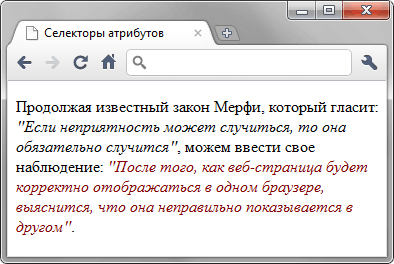

Селекторы атрибутов
Устанавливает стиль для элемента, если задан специфичный атрибут. Его значение в данном случае не важно.
Синтаксис
[атрибут] { Описание правил стиля }
E[атрибут] { Описание правил стиля }Стиль применяется к тем тегам, внутри которых добавлен указанный атрибут. Пробел между именем селектора и квадратными скобками не допускается.
Пример
<!DOCTYPE html>
<html>
<head>
<meta charset="utf-8">
<title>Селекторы атрибутов</title>
<style>
q {
font-style: italic; /* Курсивное начертание */
quotes: "\00AB" "\00BB"; /* Меняем вид кавычек в цитате */
}
q[title] {
color: maroon; /* Цвет текста */
}
</style>
</head>
<body>
<p>Продолжая известный закон Мерфи, который гласит: <q>Если неприятность
может случиться, то она обязательно случится</q>, можем ввести свое наблюдение:
<q title="Из законов Фергюссона-Мержевича">После того, как веб-страница
будет корректно отображаться в одном браузере, выяснится,
что она неправильно показывается в другом</q>.</p>
</body>
</html>Результат примера показан на рис. 1.

Рис. 1. Изменение стиля элемента в зависимости от применения атрибута title
В данном примере меняется цвет текста внутри контейнера <q>, когда к нему добавляется атрибут title. Обратите внимание, что для селектора q[title] нет нужды повторять стилевые свойства, поскольку они наследуются от селектора q.
Спецификация
| Спецификация | Статус |
|---|---|
| CSS Selectors Level 3 | Рекомендация |
| CSS 2.1 | Рекомендация |
| CSS 1 | Рекомендация |
Браузеры
| Internet Explorer | Chrome | Opera | Safari | Firefox |
| 7 | 1 | 9 | 3 | 1 |
| Android | Firefox Mobile | Opera Mobile | Safari Mobile |
| 1 | 1 | 9 | 3 |